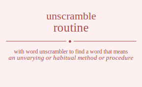

The word found after unscrambling routine means that an unvarying or habitual method or procedure, a short theatrical performance that is part of a longer program, a set sequence of steps, part of larger computer program, found in the ordinary course of events, .
